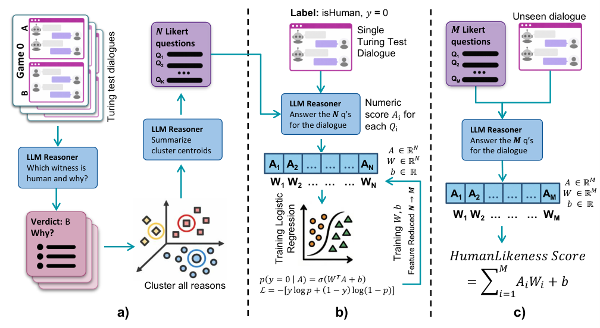
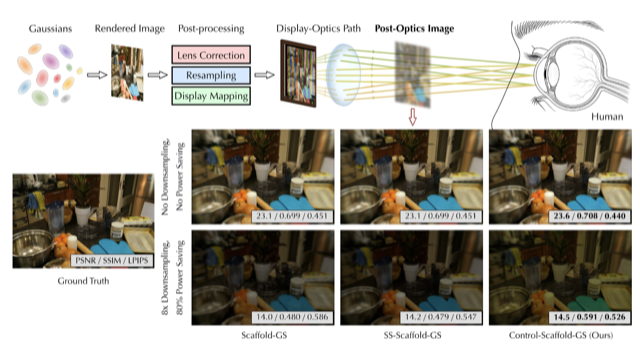

XR & wearable systems
End-to-end AR platforms, sensing and rendering pipelines, and optical system design.
I’m a final-year Computer Science undergraduate at the University of Rochester, where I work on XR systems, human–AI interaction, and computer vision.
At Horizon Lab, I lead an open wireless varifocal AR platform with Prof. Yuhao Zhu. Previously, I worked with Dr. Masum Hasan and Prof. Ehsan Hoque in the ROC-HCI LAB on human-like conversational AI.
Seeking MS / PhD opportunities · Graduating May 2027
End-to-end AR platforms, sensing and rendering pipelines, and optical system design.
Human–AI interaction, conversational behavior, and interpretable language-model alignment.
Scene understanding, depth-aware image analysis, and perception in real-world systems.
Started as an Open Lab Support Teaching Assistant in the Computer Science department.
Presented End-to-End Wireless Varifocal AR Prototype at NY Architecture & Systems Day, Princeton University.
Conference papers


SIGGRAPH Asia 2026 Conference Paper
A wearable research platform connecting sensing, server-side localization and rendering, and a varifocal display.
Mentor: Prof. Yuhao Zhu
My role: Lead the optical, hardware, and software co-design and development of the Open AR Platform
Language-model alignment for human-like virtual patient dialogue and medical communication training.
Mentors: Dr. Masum Hasan and Prof. Ehsan Hoque
My role: Assisted with DPO training and dialogue data preparation for SOPHIE-LLM
Computer vision–based green index analysis of street-view images.
Mentor: Prof. Cantay Caliskan
My role: Designed and built the street-view green index analysis pipeline
Bachelor of Science in Computer Science
GPA: 3.99 / 4.00 · Rochester, New York
University of Rochester
Teaching Assistant
Teaching Assistant
Teaching Assistant
Workshop Leader and Teaching Assistant
Tutor
Artificial Intelligence Intern · Beijing, China
Deployed YOLOv5 on Jetson Nano and integrated camera perception with real-time smart-car control.